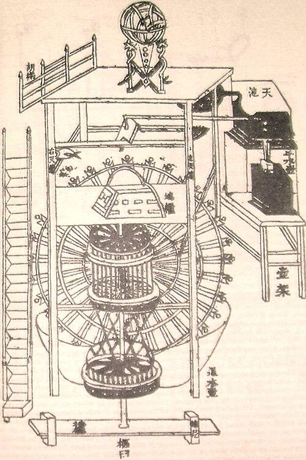
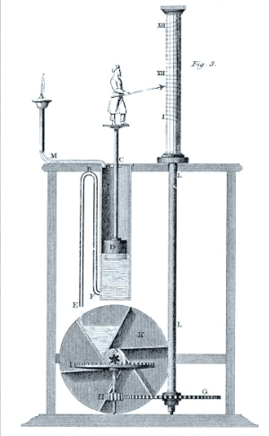
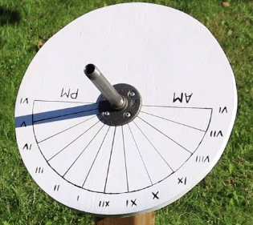
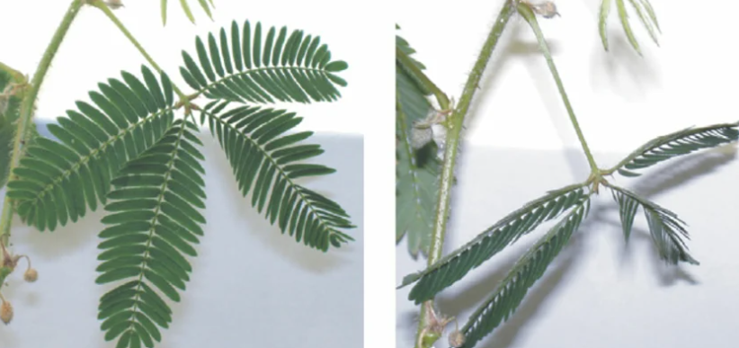

Time-Keeping Throughout History
Without checking a clock, you may have a natural intuition for the time, day, or month based on numerous factors including the position of the sun, seasonality, sunshine duration, or moon phase. In the absence of these exogenous cycles, your body has many internal processes, called endogenous cycles. These endogenous cycles rely on cyclical processes, which can include metabolism, the sleep-wake cycle, the menstrual cycle, and hormonal release. Many of these cycles can be placed into three distinct groups: ultradian, circadian, and infradian rhythms. This is all under the field of chronobiology, a field of biology that studies cyclical phenomena in organisms. Through the course of history, the ability to measure time has proven to be a very useful one, and humans have always had numerous ways of measuring time even without the advent of mechanical time-keeping devices.
Primitive time-keeping methods involved following many of these exogenous cycles. Many ancient cultures, such as the Egyptians, Sumerians, Persians, and Chinese, used the lunar cycle to form a general lunar calendar. A remnant of the lunar calendar persists in the modern Gregorian calendar, as the month is roughly one lunar cycle long (Breasted, 1935). Many of the aforementioned cultures also measured time relative to the seasons, as the dependence on agriculture necessitated an understanding of the seasons. For smaller divisions of time, devices such as the sundial, hourglasses, water-wheels, and candle clocks were invented. Although the invention of these devices were major successes in time-keeping, they each had their disadvantages. For example, the sundial required a clear, sunny day to properly function and with limited precision.
In terms of precision, the invention of the pendulum clock in 1656 by Christiaan Huygens revolutionized precise time-keeping. The importance of the invention is one that cannot be understated; the development decreased time error down to mere seconds per day, and gave scientists the much needed precision to measure tiny intervals of time. The pendulum clock remained in regular use as the most effective form of time-keeping up until the 1930s.
Modern day time-keeping is through the use of atomic clocks through the use of the number of oscillations in transitions of the cesium-133 atom, which occurs in highly consistent intervals. In fact, the current definition of a second is defined to be the length of time associated with 9,129,631,770 periods of these oscillations. Note that the official definition presented from the SI unit system can be measured from anywhere in the universe and will stay constant regardless of time. This is opposed to the legacy definition of exactly 1/86,400 of the time it takes for the Earth to complete one revolution, as it requires the observer to not only be near the Earth, but the time it takes for one earth revolution is not constant.
(When it was finished in 2012, the Three Gorges Dam in China slowed Earth's rotation and lengthened the day by 0.06 microseconds. This is the same principle that causes a figure skater to slow down when they stretch their arms out.)
Ancient Chronobiology
Learning Objective: Compare and contrast ancient civilizations, relationship with time and chronobiology.
Throughout ancient history, many civilizations have noticed the periodic nature of certain natural processes. Many of these civilizations have independently developed their own time-keeping system and calendars, as well as noticing how to take advantage of their own internal rhythms for medicinal purposes. Even before the development of the formal field of chronobiology, these concepts were used by many.
Egyptians
The ancient Egyptians developed their own lunar calendar at around 3000 BCE during the Early Dynastic Period. Through the use of 36 groups of stars called decans, they were able to track time even during night. The Egyptians were noted to have used the stars’ “vibrations,” which likely corresponded to the movement of the stars in the night sky, to calculate the approximate time during the night. Furthermore, they initially used these stars to subdivide their yearly calendar into 360 parts, which still persist in the modern calendar. However, when the Egyptians noticed that the star Sirius reappeared every 365 days, they appended those extra days into their calendar, creating the 365-day yearly cycle (Elgammal, 2022).
Mayans
Similar to the Egyptians, the Mayans independently created their own calendar system based on celestial bodies (Šprajc et al., 2019). Their calendar system involved two different systems. The first was the Tzolk’in, which involved 20 named days combined with 13 other numbers, creating a 260-day calendar used primarily for religious ceremonies. Notably, their second calendar independently landed on the 365-day civil calendar, but it was separated between 18 different months of 20 days plus an extra 5 days called the Uayed days. Compared to the Egyptians, the Mayans were aware of the fact that the solar year was not exactly 365 days, estimating the year to be approximately 365.24 days, but they did not include the leap year into their calendar. Notably, this elaborate system was used for optimizing the cultivation of corn. Despite not explicitly knowing the internal rhythms of plants, they used exogenous astronomical observations to calculate seasonal agricultural periods, demonstrating ancient application of chronobiological concepts.
China
On the other hand, ancient Chinese physicians are reported to have observed a relationship between certain times of day and the activity of bodily functions, which Balzer notes that they called the Ying and the Yang (Balzer, 2009). Using this information, Chinese physicians would care for patients by timing treatments and predicting when symptoms would be most likely to appear or worsen. This understanding is formulated in the Yellow Emperor’s Classic of Medicine, which describes how they believed ‘Qi’ flows through the human body over the course of the day: the lungs from 03:00-05:00, the large intestines from 05:00-07:00, the stomach from 05:00-07:00, and so on throughout the body in two-hour intervals (Balzer, 2009). For purposes such as timing the treatments, the ancient Chinese also constructed the Astronomical Clock Tower of Su Song, which used a water-wheel to track time (Yan & Lin, 2002). With these developments, it is clear that the Chinese had some understanding of the principles of chronobiology and how to apply them in medicine. Figure: the original diagram of Su’s book showing the inner workings of his clocktower.

Greece and Rome
The Greeks and Romans also applied chronological concepts to treat their patients (Miller, 2023). Similar to Chinese physicians, they noticed that symptoms such as fevers would occur with regular patterns, and understood how the timing of the treatment would affect treatment effectiveness. Physicians would monitor the state of each patient, and they had logged general patterns on “critical days,” on whether or not a patient’s symptoms would either worsen or fade. To keep track of these measurements accurately, they adopted the sundial for measuring time in the sunlight and the clepsydra for using water to measure time in rooms and night-time. Clearly, Greek and Roman medicine was also heavily influenced by their understanding of endogenous rhythms, with their observations also informing their treatment plans.

Figure: A 19th-century illustration of a clepsydra from the 3rd-century BCE.
Activity: Engineering a Sundial
Learning Objective #2: Construct a rudimentary time-keeping device.
Expected construction time: ~1 hour Expected materials needed: paper plate, pencil, ruler, protractor, compass, marker, tape, straw, scissors, sunlight
The sundial is one of the oldest methods of time-keeping, dating back to 1500 BCE in ancient Egypt. The sundial has been used for a large portion of human history and has been passed to numerous different cultures outside of ancient Egypt such as to the ancient Greeks and Romans. The sundial has two main components: the gnomon and the dial. The gnomon is the part of the sundial that casts the shadow onto the dial, and the dial is lined with numerous different angles corresponding to different times. Throughout the sky, the sun moves at a constant rate of 15 degrees per hour, changing the shadow cast by the gnomon, which will tell the time. We will try to construct a sundial that is accurate to within 20 minutes.
Instructions
- Poke a hole into the paper plate. This will be the dial.
- Push a straw out through the center hole. This will be the gnomon. The gnomon should be either vertical or be slightly slanted but stay still.
- On a sunny day, set the sundial outside.
- Using a compass, align the gnomon with True North (if in the northern hemisphere) or with True South (if in the southern hemisphere).
- In the sunlight, at the start of every hour, mark the position the gnomon casts onto the dial, and label it with the time. Come back at the start of every possible hour to complete the dial.

Reflection
- What are some limitations of the sundial?
- What does the function of the sundial depend on?
- Compare this with your own body. If you were locked in a room without windows, how would you be able to guess how much time has passed?
- What does this tell you about endogenous versus exogenous rhythms?
- The chapter describes how the advent of the pendulum clock reduced time-keeping error to seconds per day. What limitations does this address?
- How would you track the time at night using the sky?
A Birth of a New Field
Learning Objective: Identify recurring themes that motivated the development of the field of chronobiology throughout history.
Jean-Jacques d’Ortous de Miran’s Mimosa Plants
In 1729, French astronomer Jean Jacque d’Ortous de Mairan placed a mimosa plant into a dark cabinet and left it there. A mimosa plant regularly opens its leaves during the day and folds them at night. De Mairan discovered that the plant opened and closed its leaves in regular intervals even in the absence of light stimuli. At the time, de Mairan concluded that the mimosa plants were able “to sense the Sun without ever seeing it” (De Mairan, 1729). However, this finding would be the catalyst that would eventually spark the creation of the field of chronobiology. It was not until almost a century later that the Swiss botanist Augustin Pyramus de Candolle measured the regular intervals of leaf movements to have a period of approximately 22-23 hours, demonstrating a preliminary understanding of an endogenous circadian rhythm in plants (McClung, 2006).

Figure: A mimosa plant with leaves opened (left) and leaves folded (right).
Colin Pittendrigh’s Fruit Flies
While de Mairan’s experiment demonstrated the existence of biological rhythms in plants, Colin Pittendrigh would prove that such cycles exist in animals too. Pittendrigh found that fruit flies had a roughly 24 hour cycle even in the darkness, similar to the mimosa plant. Furthermore, Pittendrigh also found that by adjusting the times at which they were exposed to light, he was able to shift those cycles forward or backwards, demonstrating how these cycles respond to light (Pittendrigh & Minis, 1972). This finding eventually established the use of fruit flies as a useful organism to study biological rhythms on, and also they fully solidified the study of chronobiology as an experimental science that can be studied in both plants and animals.
Chronobiology in the Modern Day
Learning Objective: Compare modern day understanding and application of chronobiology with ancient chronobiology.
The Period Gene
While scientists knew about the existence of these biological rhythms by the 1960s, there was no understanding of what exactly causes them to have these rhythms. In 1971, while Ron Konopka and Seymour Benzer were breeding fruit flies, they discovered that fruit flies had variations in their circadian rhythms (Konopka & Benzer, 1971). Some fruit flies had rhythms longer than 24 hours, some had shorter, and some had no regular circadian rhythms. By this time, they had the field of genetics at their disposal, to which they were able to pinpoint the variation to a gene which they called period. This marks the very first time scientists discovered a gene that controls a biological clock, officially proving that biological rhythms are not a learned behavior or a passive response to stimuli. In the upcoming decades, a few scientists found that it produces a protein called PER, and that it builds up during the night and degrades in the day,, which is how the gene gives rise to a circadian rhythm.
Transcription-Translation Feedback loops
The clock gene demonstrates how biological rhythms are an inherent part of an organism, but how exactly does it work? In preliminary terms, the clock gene activates and produces mRNA, which then creates a clock protein. After many repeats of this, these proteins build up until the cell senses that there is enough. Eventually, these proteins break down, allowing more room for more of them to be produced. This self-sustaining cycle takes roughly 24 hours to complete, giving the cell a 24 hour cycle. This negative feedback loop was discovered by 3 scientists: Hall, Rosbash, and Young. For this discovery, the three of them won the Nobel prize in medicine in 2017.
Chronobiology Today
Today, the study of chronobiology has many applications in medicine. Understanding sleep disorders such as insomnia, non-24-hour sleep-wake disorder, and shift-wake disorder is one such area of active research. When viewing these disorders through the lens of chronobiology, it asks what happens to the biological clocks of individuals who suffer from these disorders, and how we can treat them. Circadian disruption asks how events such as jet-lag and night-shifts impact the circadian rhythm and any health risks that may have. Another example is the development of chronotherapy, which is getting further developments since ancient times.